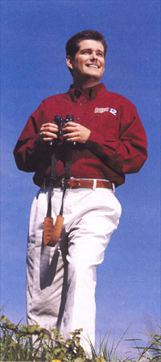

Seeking New Horizons
Kurt Ludlow brings a different style of
investigative reporting to Oregon's News 12
Atop Powell Butte Nature Park in Southeast Portland, Kurt Ludlow surveys the sweep of snowcapped peaks from Mt. St. Helens to Mt. Jefferson. "I had no idea this was here," he says appreciatively. "I'm going to come back and explore."
Ludlow sees fresh vistas everywhere since joining KPTV in April as anchor for The 10 O'Clock News after a dozen years at WBNS in the flatlands of Columbus, Ohio.
Bright sun and a 70-degree day offer a soothing respite. He's experiencing "all the major stresses at
once"--beginning a new job, moving, finding a home and getting married in June. In his first week on the air, he hosted
KPTV's live Scared Straight special. He's also endured grueling days
reporting the Littleton high school tragedy. As a Colorado native, the murders hit close to home. He admits, "You'd give anything not to deliver that news."
|
 |
|
Change
of scenery: Colorado native Kurt Ludlow savors the Northwest
[photo by Owen
Carey] |
Ludlow's presence marks a change of pace for Oregon's News 12 as KPTV reasserts itself as a tough, prying, hard-news operation. News director John Sears says Portland hasn't seen the type of investigative reporting Ludlow practices. For starters, his stories will run year-round, not just as stunts in sweeps months. Secondly, Sears expects Ludlow to dig well below the surface through database analysis.
That means "we look for interesting information" by comparing computer files, Ludlow explains. "The government compiles a lot of information about us, and all of it is public record. Combine it with one or two other databases and you can learn a lot."
To uncover vote fraud, he might take a state list of everyone who has died and a list of everyone who voted in the last election to see if any of the dead managed to vote posthumously. A list of emergency medical technicians merged with a list of people
with drunk driving convictions can reveal EMTs who shouldn't be driving. Or, he might want to learn which health inspectors are the toughest or which restaurant owners run the cleanest kitchens.
Don't call him a cyber-sleuth; Ludlow claims he's "not a computer whiz." But he has trained to "crunch the numbers and be able to understand the answers."
Investigative reporting as Ludlow practices it has nothing to do with hidden cameras or going under cover. It has to do with patient
research--hiking the paper trail, so to speak. The search won't always yield great video footage, and might even be hard to show on-screen. Extra work by computer graphics artists may be needed to explain his findings. "It's time-intensive," Ludlow says. "It's not something you can turn out overnight. It might take months."
KPTV President and General Manager Marty Brantley acknowledges that investigative stories can put a station at odds with its advertisers. When the station believes a story to be true, it must stand behind its reporters, he says, no matter the financial hit the station takes.
Not that Ludlow can't plan a story for maximum visual impact. His 1996 special Inside the Fire started with a premise worthy of
Backdraft: "We burned a house down. We had 10 cameras inside and around the house to show how it burned. It was one of my most incredible experiences as a journalist."
He says it was worth losing two of the cameras to the inferno because the special is still used by Ohio fire department schools to teach kids about getting out alive.
Inside the Fire won him a coveted Edward R. Murrow Award and one of his five Emmys'.
He wrote another "crash and burn" story about car and train collisions and arranged for a locomotive to plow into a parked car. "I
got to do some great stories," he chuckles.
Eager student Ludlow studied journalism at University of Colorado and earned a law degree from Capital University Law School. Studying law while working fulltime was "miserable," he says, but it "taught me a different way to think, to analyze things, to focus on details."
Away from the anchor desk he's a "terminally intermediate golfer" and an amateur magician who loves every type of performance from music to movies to Broadway shows. He expects to pursue the "blue sky activities" of hiking and camping he enjoyed in Colorado. He dotes on his twin 4-year-old daughters Miranda and Abigail, who live in California with their mother.
To become a Northwesterner he's poring over "lots of maps" and history books. "My plan is to head out, explore and take part in all the things that are going on."
In one way he already feels at home in his new state. Back in Ohio, he helped to pioneer recycling at his workplace. "At KPTV you can recycle everything. When I saw that, I thought, I'm going to fit in here."
BY ERIK H. BERGMAN